Common name : Yellow mallow tree
Common name in Tamil : Nir paratthe
Common name in Telugu : Etagogu
Common name in Singhalese : Beli patta
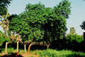
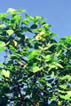
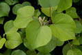
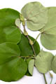
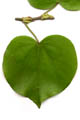
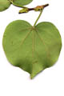
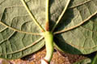
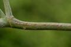
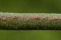
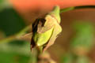
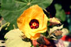
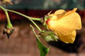
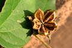
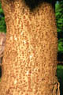
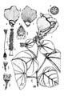
Diagnostic characters
Botany & morphology
Regeneration
Reproductive biology
Ecology
Distribution
Uses
Small trees, up to 10 – 15 m height. Flowers yellow, bell-shaped; fruit capsule.
Leaves simple, alternate, broadly cordate, 5 - 15 cm across, apex acute, 5 or more palmately nerved, margin entire or serrulate, glabrous above, minutely grey tomentose beneath; stipules large.
Inflorescence solitary.
Flowers regular, bisexual, yellow with crimson at center; calyx 5-lobed, persistent; petals 5, connate; ovary 5 celled; styles 5, connate below; stigmas usually capitate.
Fruit capsule, globose, beaked, 10-celled, 5-valved; seeds punctuate, with few stellate hairs.
Bark leathery with smooth texture.
Epigeal germination.
Pollination by insects.
Back mangrove species and also found planted near beach.
Throughout the tropics as a cultivated or wild species.
The bark fiber used for string or ropes for making fishing nets or caulking boats. Medical preparations have been made from roots, foliage, bark and flower tissue. The leaves used as cattle feed.
Top of the page